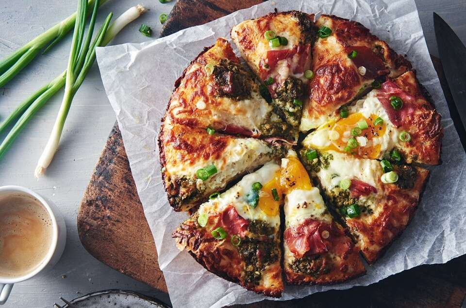

Crispy Cheese Pizza

Crispy Cheese Pizza (https://www.kingarthurbaking.com/recipes/crispy-cheesy-pan-pizza-recipe)
With its crispy golden edges, gooey layer of cheese (right to the edge!), and thick yet delicate crust, this pizza has a texture and taste that make you want more.
Ingredients
Crust/Pie Dough
- 2 cups (240g) Unbleached All-Purpose Flour
- 3/4 teaspoon salt
- 1/2 teaspoon instant yeast or active dry yeast
- 3/4 cup (170g) water, lukewarm
- 1 tablespoon (13g) olive oil
- 1 1/2 tablespoons (18g) olive oil for greasing the cast iron pan
Toppings
- 6 ounces (170g) mozzarella cheese, grated (about 1 1/4 cups, loosely packed)
- 1/3 to 1/2 cup (74g to 113g) tomato sauce or pizza sauce, homemade or store-bought
- freshly grated hard cheese (e.g. Parmesan, Asiago, Romano) and fresh herbs (oregano, basil, thyme) for sprinkling on top after baking, optional
Steps
- Combine all doug ingredients in a mixing bowl and mix until a shaggy dough is formed.
- Cover and rest the dough for 5 minutes.
- Conduct a stretch and fold of the dough, by folding the dough onto itself.
- Cover and rest the dough for 5 minutes. Complete the next set of stretch and folds, and repeat this process until four total sets of stretch and folds have been conducted.
- Allow the dough to rest for a further 40 minutes covered. Then place in the refrigerator for a minimum of 12 hours, upto 72 hours.
- Prepare a cast iron pan by greasing with approximately 18g of olive oil.
- Place the cold dough into the oiled pan. Stretch and dimple the dough until it covers the bottom of the pan.
- Cover the dough and allow to rest at room temperature for 2 hours.
- 30 minutes before baking the dough, pre-heat the oven 230 degrees Celsius.
- Add toppings onto the dough and bake the pizza for 18 - 20 minutes, until cheese is melted and crust is browned.
- Remove from oven and cut the pizza after allowing to cool slightly.